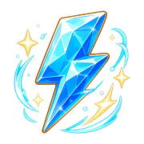

当前故事
尚未生成
0 字
选择世界观和故事主题，填写或留空核心要素，然后生成新故事。
坏结局
你的目标是改写特殊情节，把坏结局变成好结局。
Bad Ending Rescue
进入故事裂隙，改写一句关键台词，把注定坠落的结局拉回光里。
Bad Ending Rescue

能量 5 / 5点击“开始闯关”后，将随机生成世界观、故事主题和核心要素。
选择世界观和故事主题，填写或留空核心要素，然后生成新故事。